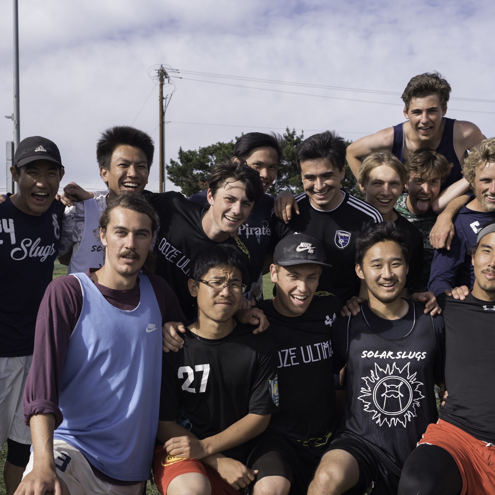
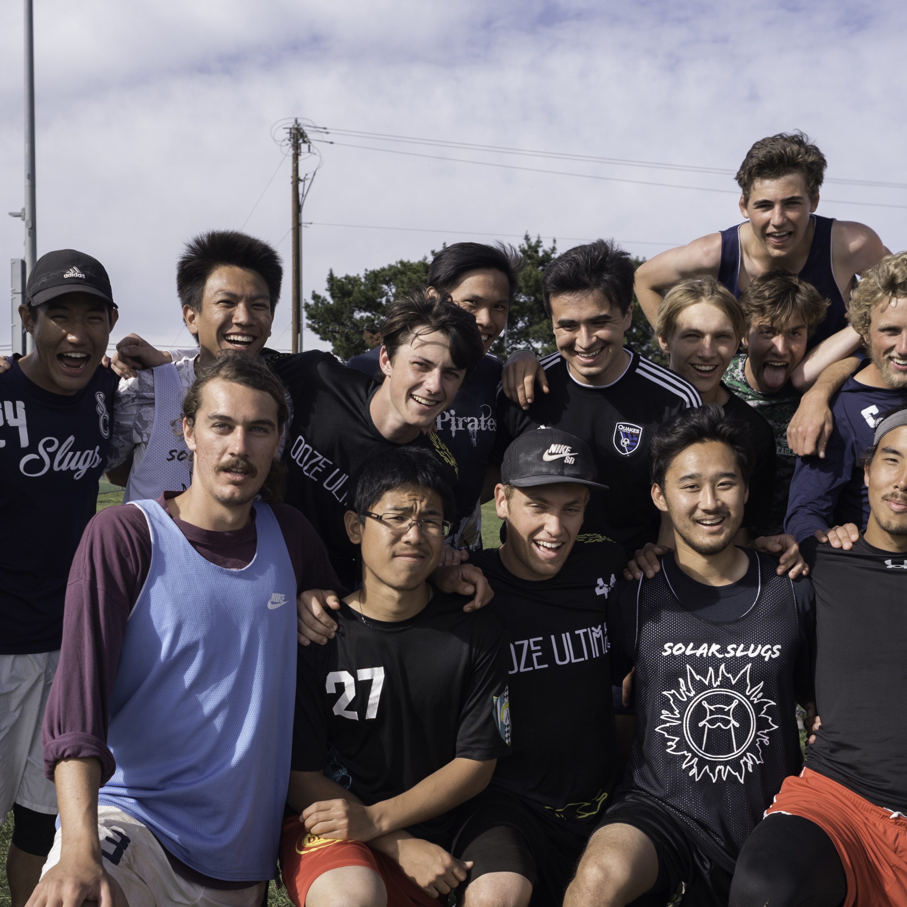

biography
Hello! My full name is Kristopher Thomas Rollert, but most people call me Kris. I was born in Pasadena, but my parents moved to my brother and me to South Pasadena right before I entered Kindergarten. I joined Boy Scouts in sixth grade and eventually became an Eagle Scout in twelfth grade. After graduating South Pasadena High School, I enrolled in the University of California, Santa Cruz. I am currently a third year at UCSC and have declared majors in both Computer Science and Computational Mathematics. In my free time, I am always trying to improve myself. Right now that means learning server side coding and trying to teach myself the guitar. To relax, you can find me playing ultimate frisbee or picking up a game of chess. When I am back in South Pasadena, you can find me helping my brother run the Los Angeles Chess Social or taking my dog (Annie) on a run. Want to find out more about me? Send me an email in the contact section below!


 
